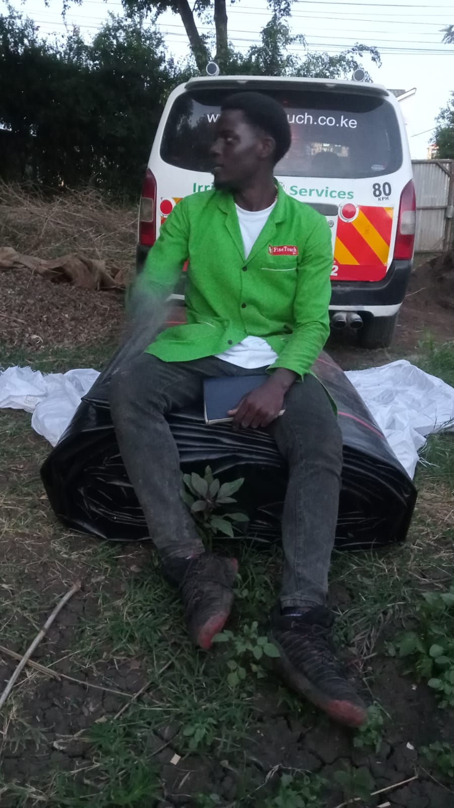
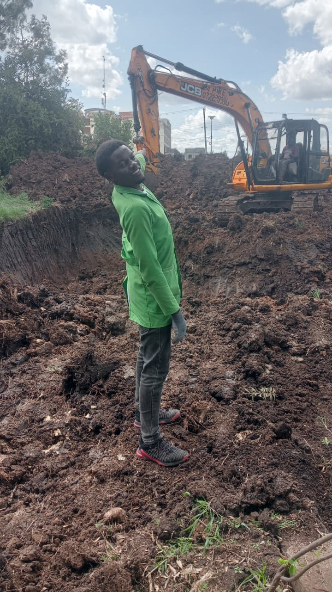

Dam Liner Installation
Resilient HDPE liner installation for water retention and seepage control at a community reservoir.
Location: Juja -Nairobi county| Year: 2026
Welcome to the visual portfolio of Elkana Mbati, where sustainable irrigation, damlining and community water solutions meet modern design. The projects shown below illustrate:
Every image is paired with a practical engineering note. Click each card to read in-depth case summaries or view the full project report.

Resilient HDPE liner installation for water retention and seepage control at a community reservoir.
Location: Juja -Nairobi county| Year: 2026
Performance of a music video showcasing water engineering projects.
Location: Toll-Nairobi county| Year: 2026

Drip irrigation network for smallholder farms reducing water use by 45% while improving yield.
Crop: Amaranth and Vegetables | Water saving: 45%

Solar-powered borehole pump project supplying clean water to over 1,500 households.
Impact: 1,500+ beneficiaries | Co-funded by Finetouch Africa
On-site Petrol sprayer performance evaluation for a client .
Key metric: 98% uptime after commissioning
Water engineering is more than infrastructure. It combines hydrology, soil science, and community engagement to design systems that are robust, cost-efficient, and climate-smart. Elkana’s approach ensures projects meet ISO 14001 environmental standards while maximizing stakeholder value and local stewardship.
Value pillars: sustainability, resilience, productivity, and digital surveillance.